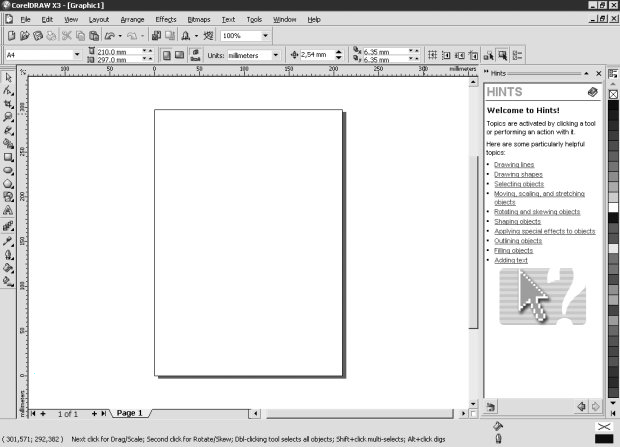
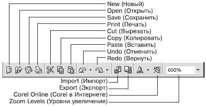
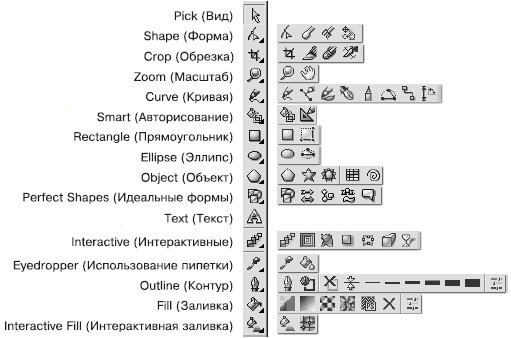
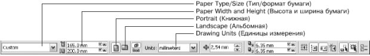

СОВЕТ. Если панель свойств в окне программы CorelDRAW не соответствует тому виду, который представлен на рис. 1.4, выберите на панели графики инструмент Pick (Выбор) ( ) и щелкните на свободном месте рабочей области.
) и щелкните на свободном месте рабочей области.
Лекция посвящена интерфейсу программы. В ней рассматриваются основные элементы окна CorelDraw, параметры, принадлежащие той или иной панели и предварительные настройки, необходимые для начала работы.

Программа CorelDRAW X3 открывается в стандартном виде окна приложения Windows с печатной страницей в центре (рис. 1.1).
Основными элементами окна CorelDRAW являются:
строка заголовка с тремя кнопками управления размером окна, расположенными справа: Свернуть, Развернуть/Свернуть в окно, Закрыть;
строка меню (Menu Bar); каждое меню содержит множество пунктов, которые открывают подменю, выводят на экран диалоговые окна или выполняют конкретные команды;
панель инструментов (Toolbox) — панель графики;
панель свойств (Property Bar) — набор параметров конкретного инструмента, выбранного на панели инструментов;
цветовая палитра (Color Palette);
пристыковываемые окна (Dockers) — элементы, предназначенные для настройки параметров выполнения тех или иных действий; они обычно открываются в служебной области в правой части окна.
Если какая-либо панель отсутствует в окне программы CorelDRAW, то для ее отображения следует выполнить следующие действия.
В строке меню выберите пункт меню Window (Окно), щелкнув на нем кнопкой мыши.
В раскрывшемся списке выберите пункт Toolbars (Панели инструментов), а затем выберите название требуемой панели, переведя на него указатель мыши и щелкнув кнопкой мыши.
Выполнение этих действий приведет к установке напротив названия панели флажка и появлению выбранной панели в окне программы CorelDRAW.
Чтобы спрятать панель, выполните такие действия.
В меню Window (Окно) выберите пункт Toolbars (Панели инструментов).
Выберите в списке панелей инструментов требуемое название с установленным флажком, переведите на него указатель мыши и щелкните.
Выбор панели приведет к снятию соответствующего флажка и исчезновению панели из окна программы CorelDRAW.

Рис. 1.1 Окно программы CorelDRAW X3
Чтобы отобразить цветовые палитры, необходимо выполнить следующие действия.
Выберите пункт меню Window (Окно).
Щелкните на пункте Color Palettes (Цветовые палитры).
В списке цветовых палитр выберите нужную, переведя на нее указатель мыши и щелкнув.
Чтобы спрятать цветовую палитру, необходимо выполнить вышеописанные действия и щелчком кнопки мыши снять соответствующий флажок.
Для успешной работы необходим следующий минимальный набор панелей (см. рис. 1.1):
панель графики;
панель свойств;
стандартная панель инструментов;
цветовая палитра.
Стандартная панель инструментов располагается непосредственно под строкой главного меню (рис. 1.2).

Рис. 1.2 Стандартная панель инструментов
Элементы стандартной панели инструментов предназначены для выполнения таких действий:
New (Новый) — создать документ текущего формата печатной страницы;
Open (Открыть) — открыть диалоговое окно Open Drawing (Открыть рисунок), позволяющее выбрать существующий рисунок и открыть его;
Save (Сохранить) — сохранить рисунок;
Print (Печать) — открыть диалоговое окно Print (Печать);
Cut (Вырезать) — копировать объект в буфер обмена с удалением его с рабочей области;
Copy (Копировать) — копировать объект в буфер обмена без удаления его с рабочей области;
Paste (Вставить) — вставить скопированный в буфер обмена объект на рабочую область;
Undo (Отменить) — отменить выполненное действие;
Redo (Вернуть) — повторить действие, отмененное предыдущей командой;
Import (Импорт) — импортировать на рабочую область растровое изображение;
Export (Экспорт) — экспортировать файл в другой формат;
Zoom Levels (Уровни увеличения) — раскрывающийся список, из которого можно выбрать один из доступных масштабов просмотра рисунка в окне документа:
To Fit (По картинке) — отображение всех объектов рисунка так, чтобы они занимали все окно документа;
To Selected (По выбранному) — отображение только выделенных объектов таким образом, чтобы они занимали все окно документа;
To Page (На страницу) — режим показа печатной страницы в центре окна;
To Width (По ширине) и To Height (По высоте) — режим подгонки размеров изображения печатной страницы под размер окна документа по ширине или по высоте соответственно;
10%... 400% — режимы показа печатной страницы рисунка с соответствующим уменьшением или увеличением относительно исходного размера (100%).
Данная панель содержит инструменты для создания объектов, изменения их формы, применения специальных эффектов, работы с цветом и т. п. (рис. 1.3).

Рис. 1.3 Развернутый вид панели инструментов: группы инструментов
В правом нижнем углу большинства кнопок инструментов имеется маленький треугольник. Он указывает на то, что данная кнопка отвечает за целую группу инструментов. Чтобы сменить текущий инструмент с помощью мыши, щелкните на такой кнопке и на появившейся панели переместите указатель к нужной позиции.
Перед началом рисования вы можете установить параметры макета страницы, используя панель свойств (рис. 1.4)
СОВЕТ. Если панель свойств в окне программы CorelDRAW не соответствует тому виду, который представлен на рис. 1.4, выберите на панели графики инструмент Pick (Выбор) () и щелкните на свободном месте рабочей области.
Размер рабочей области практически бесконечен, а вот формат печатной страницы имеет конечные размеры: ширину и высоту (см. рис. 1.1).
Перечислим основные параметры печатной страницы.
Paper Type/Size (Тип/Формат бумаги). Программа CorelDRAW поддерживает обширный набор размеров страниц документа, соответствующих стандартам многих стран мира. Среди этих форматов — размеры стандартных конвертов, а также этикеток.
Paper Width and Height (Ширина и высота бумаги). Значения этих параметров — ширины (Width) и высоты (Height) — автоматически обновляются в соответствии с выбранным форматом бумаги. Однако несмотря на это вы всегда можете задать для них собственные, независимые значения.
Portrait (Книжная) и Landscape (Альбомная) — кнопки, управляющие ориентацией страницы.
Drawing Units (Единицы измерения). Проведение построений в программе CorelDRAW возможно в различных единицах измерений.

Рис. 1.4 Панель свойств
Предварительные настройки формата бумаги, ее ориентации, выбор тех или иных единиц измерения, а также наличие или отсутствие панелей не являются необходимым условием для начала работы в программе CorelDRAW, поскольку во время работы всегда можно произвести требуемые изменения. Однако отображение минимального набора инструментов и палитр поможет организовать будущую работу.